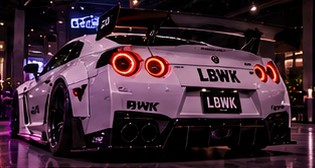
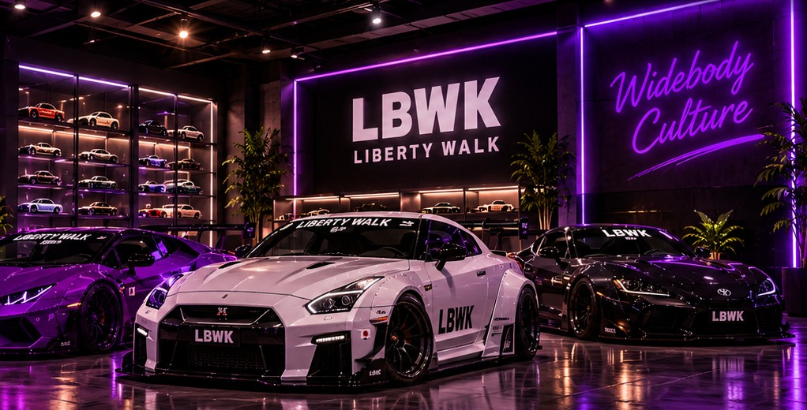
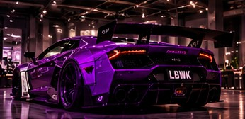
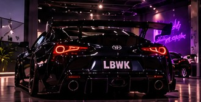
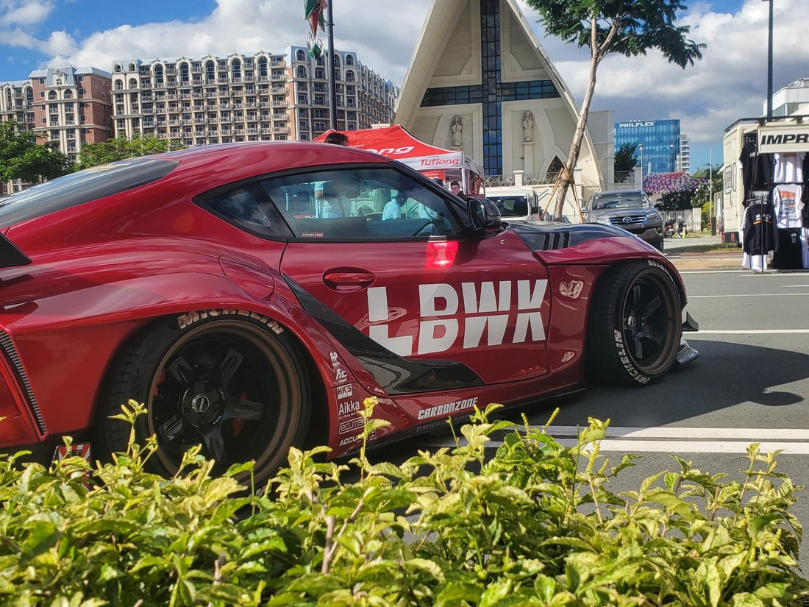

Nissan GT-R R35
LBWK Widebody Kit
LBWK Legends
This week we’re featuring the iconic Liberty Walk lineup: wide, bold and unmistakably legendary.


LBWK Widebody Kit

LBWK Performance

LBWK Custom

LBWK is short for Liberty Walk, a Japanese tuning house known for wide, aggressive body kits. Their cars are easy to spot: flared fenders, deep-dish wheels and big graphics down the side.
This red widebody was photographed at a local car meet. It is exactly the kind of build we want to show off on our JDM wall.
Nominate a build